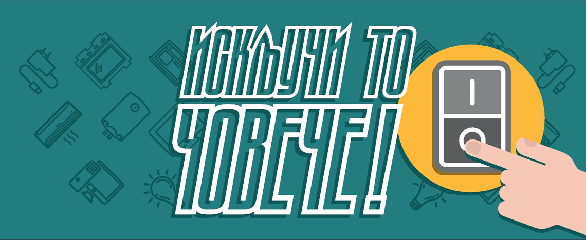
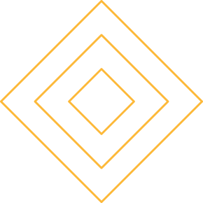
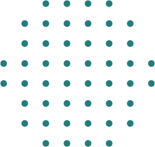
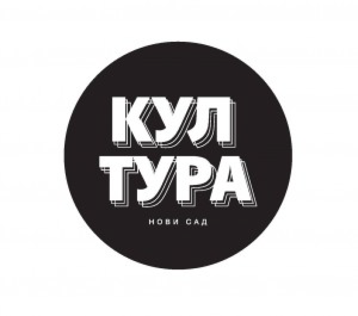
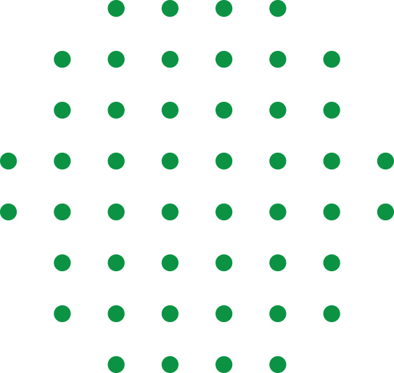
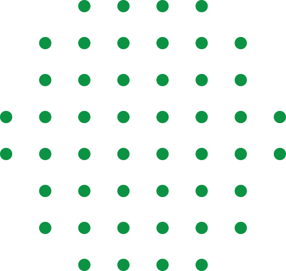
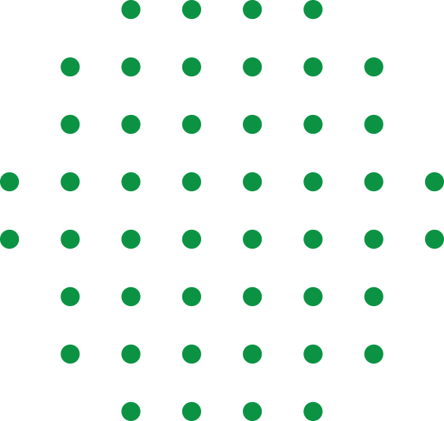

Ono što mladi vide kao najveći problem iz oblasti zaštite životne
sredine u Novom Sadu, u najvećoj meri, je nemaran odnos od strane
građana/ki, u smislu bahatog i neodgovornog odnosa prema okolini i
bacanju smeća.
Preostali odgovori su slični, ali su razvrstani u specifičnije
kategorije kako se ne bi izgubila detaljnost analize. Te kategorije se
odnose uglavnom na zagađenost: smeće, deponije, zagađenost, saobraćaj,
nedostatak kanti, industrija, buka i sl. Treba skrenuti pažnju i na
probleme koji ne spadaju u domen zagađenja: nedostatak zelenih površina,
slabu reciklažu, kao i sistemske probleme (koji se odnose na loš rad
nadležnih institucija, loše zakone i njihovo nedosledno sprovođenje).
DRUŠTVENOM IGROM ”ISKLJUČI TO, ČOVEČE!” obrađena je energetska
efikasnost kao nova tema i učenici osnovne škole kao ciljna grupa, u
smislu uzrasta u kom je najlakše kroz igru stvoriti i ozbiljne navike
bitne za budući razvoj i u adolescentskom dobu i nadalje životu odrasle
osobe.



KUL TURA Novi Sad
U toku projekta izarađena je posebno dizajnirana, sa temama novosadskih
ustanova i spomenika umetnosti i kulture, platforma za igru koja će, za
mlade prevashodno, igrajući je (prolazeći platformu), biti informativno
edukativna, vizuelna osnova i podsetnik na kulturno umetničko bogatstvo
Grada Novog Sada i okoline.
Smatramo da je to način da afirmišemo umetničko kulturnu ponudu i
podsetimo sve građane, a naročito mlade na lepotu u njihovom neposrednom
okruženju, o načinu na koji kultura i umetnost i nove ideje spajaju
ljude… Sa druge strane smatramo da Grad Novi Sad kroz ovaj i ovakve
projekte podržava ideje koje mlade vraćaju sa ulice i daje im adekvatan
sadržaj za popunjavanje vremena dokolice.
Ciljevi su:
Edukativno - informativno delovanje na građane Novog Sada, prevashodno
na decu i mlade. Podsticanje mladih na originalno, autorsko
stvaralaštvo. Kvalitetno, na dopadljiv način, koji indirektno ima
edukativno kulturnu notu, popunjavanje dokolice.

Mlad sam, jasan - glasam
OPENS 2019
YOUTH FEST na osnovu protokola o saradnji sa OPENS 2019, sprovodi
trogodišnji program pod nazivom „Mlad sam, jasan - glasam“, a u okviru
cilja iz aplikacije OPENS 2019 - 5.1. Glasamo da otvorimo vrata.
Onlajn kampanja Glasamo da otvorimo vrata cilja mlade ljude
uzrasta 18-21 koji prvi put glasaju kako bi promovisali učešće u
političkom životu. Kampanja se fokusira na mlade ljude, putem društvenih
medija i kratkih videa, koji nisu pristalice nijedne političke partije,
niti aktivni u organizacijama.

Omladinko u akciji - pazi SPAM!
Omladinko je svojevrsna i autentična maskota koja je izrađena prethodne
2017. godine kroz projekat OPENS Omladinko uz pomoć mladih novosađana
koji su kroz javni poziv davali svoje grafičke i tematske predloge.
Omladinko će na mestima na kojima se mladi okupljaju, deliti specijalno
izrađen strip Omladinko u akciji - pazi SPAM.
Kroz promotivno edukativni materijal u dva javna događaja promovisaćemo
internet i IKT kao korisnu pojavu, ali samo ukoliko se pravilno koristi.
Posebno ukazujući mladima da je neophodno da pretražuju internet
pažljivo, objasniti im važnost čuvanja ličnih podataka, susrete sa
nepoznatim ljudima sa interneta, da se čuvaju poklona, da prijave
neprimereno ponašanje pojedinaca. Takođe ćemo ukazati da internet
informacije mogu biti netačne, da koristit tehnička rešenja za blokade,
te da cilj nije uskraćivati sebi pristup internetu, već razgovararati o
korisnim stranama korišćenja interneta, ali i razgovorati o internetu i
njegovim opasnostima. Omladinko će naglasiti obavezu prijavljivanja
svakog nasilja ili nedoličnog ponašanja na internetu, bez izuzetka!
Objasniće i roditeljima da moraju da se da se edukuju i prate trendove
dece i mladih.
 
